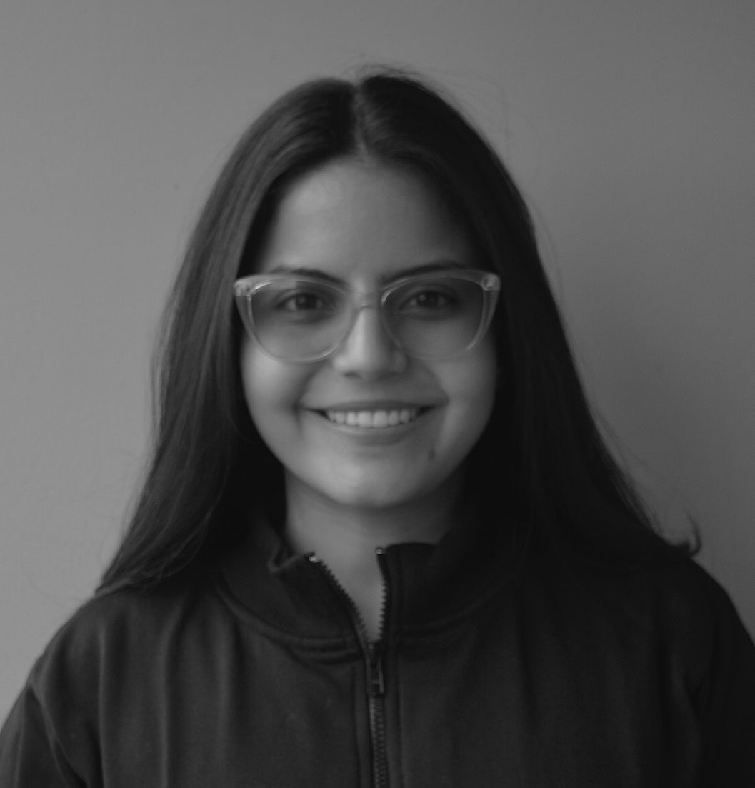

About me.
I'm Marolin Solano, a UX / Interaction Designer with 5+ years of experience designing end-to-end digital and service experiences in complex environments — including banking and large-scale platforms. I specialize in translating user insights into intuitive, scalable solutions across mobile and web.

I'm a UX / Interaction Designer with 5+ years of experience designing end-to-end digital and service experiences in complex environments including banking and large-scale platforms.
I specialize in translating user insights into intuitive, scalable solutions across mobile and web. I trained as an industrial designer at UIS in Bucaramanga, Colombia, and have worked across Bancolombia (via Pragma S.A.), Casa Editorial El Tiempo, and ADN Newspaper with bilingual capability across English (professional) and Spanish (native).
Now in Toronto, completing a Master of Design in Strategic Foresight & Innovation at OCAD University learning to design for systems and futures, not just features. Open to senior UX / Interaction Designer roles.
Currently learning, on purpose.
Master of Design Strategic Foresight & Innovation
A multidisciplinary program in Toronto focused on systems thinking, futures research, and designing under uncertainty. I joined to push past screen-deep solutions and design at the system layer the kind of thinking Google, Meta, and other top product orgs increasingly hire for.
B.A. Industrial Design - UIS, Colombia
Six years, three industries, one habit: ship and learn.
Master of Design candidate
Strategic Foresight & Innovation · OCAD University, TorontoStudying systems thinking, futures research, and designing under uncertainty, alongside ongoing senior design work.
Senior UX / Interaction Designer · Design Leadership
Pragma S.A. & Bancolombia · RemoteLead end-to-end design of digital banking experiences, optimizing mobile-first and responsive journeys at scale. Produce wireframes, interaction flows, and service blueprints. Mentor designers and promote human-centered design across teams.
Design Strategist Consultant
OCAD × CASPAR · Toronto (Hybrid)Co-created a strategic framework with the CASPAR network through a human-centered, futures-thinking approach. Facilitated participatory workshops with UofT, OCADU, and McGill partners.
UX Designer (Senior / Advanced)
Pragma S.A. & Bancolombia · RemoteDesigned digital product experiences aligning user needs with business goals in a complex financial ecosystem. Conducted UX research and usability testing across mobile and cross-platform experiences.
UX Designer (Mid-Senior / Junior)
Casa Editorial El Tiempo · Bogotá D.C. (Hybrid)Improved UX for high-traffic digital platforms including the El Tiempo digital subscription paywall and supported research, interface design, and internal UX training.
Tools are cheap. The reasoning is expensive.
- — Moderated remote interviews
- — Cardsorting & tree testing
- — First-click & 5-second tests
- — Usability testing with eye-tracker
- — Effort vs. impact prioritization
- — How-Might-We synthesis with stakeholders
- — Designing AI assisted interactions
- — Strategic foresight for product roadmaps
- — Storytelling under 3 minutes
"I design products that respect both users and the systems that have to support them."— HOW I FRAME MY WORK